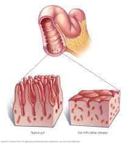

Celiaquia
Descripcion

La celíaca es una afección autoinmune que daña al revestimiento del intestino delgado. Este daño proviene de una reacción a la ingestión de gluten. Esta es una sustancia que se encuentra en el trigo, la cebada, el centeno y posiblemente la avena. Y también en alimentos elaborados con estos ingredientes.
Síntomas
- Diarrea crónica
- Dolor e hinchazón abdominal
- Pérdida de peso involuntaria
- Fatiga persistente
- Anemia por deficiencia de hierro
Tratamiento
Al ser una enfermedad crónica no tiene cura, solamente necesitamos seguir una dieta que no contenga gluten para que desaparezcan los síntomas.